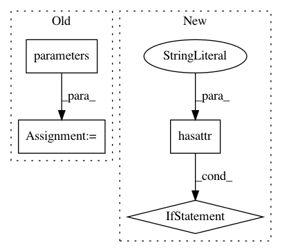

282e4e3255fd0be7c2df6f4a1ef2bbedf4eb7f82,captioning/models/AttModel.py,AttModel,init_hidden,#AttModel#Any#,98
Before Change
self.bad_endings_ix = [int(k) for k,v in self.vocab.items() if v in bad_endings]
def init_hidden(self, bsz):
weight = next(self.parameters())
return (weight.new_zeros(self.num_layers, bsz, self.rnn_size),
weight.new_zeros(self.num_layers, bsz, self.rnn_size))
def clip_att(self, att_feats, att_masks):
After Change
self.bad_endings_ix = [int(k) for k,v in self.vocab.items() if v in bad_endings]
def init_hidden(self, bsz):
weight = self.logit.weight \
if hasattr(self.logit, "weight") \
else self.logit[0].weight
return (weight.new_zeros(self.num_layers, bsz, self.rnn_size),
weight.new_zeros(self.num_layers, bsz, self.rnn_size))
def clip_att(self, att_feats, att_masks):
In pattern: SUPERPATTERN
Frequency: 4
Non-data size: 4
Instances
Project Name: ruotianluo/self-critical.pytorch
Commit Name: 282e4e3255fd0be7c2df6f4a1ef2bbedf4eb7f82
Time: 2020-07-30
Author: rluo@ttic.edu
File Name: captioning/models/AttModel.py
Class Name: AttModel
Method Name: init_hidden
Project Name: catalyst-team/catalyst
Commit Name: aab3902d4a7d55f5a86058854adc36b8a12c873f
Time: 2019-05-20
Author: ekhvedchenya@gmail.com
File Name: catalyst/dl/callbacks/base.py
Class Name: OptimizerCallback
Method Name: on_batch_end